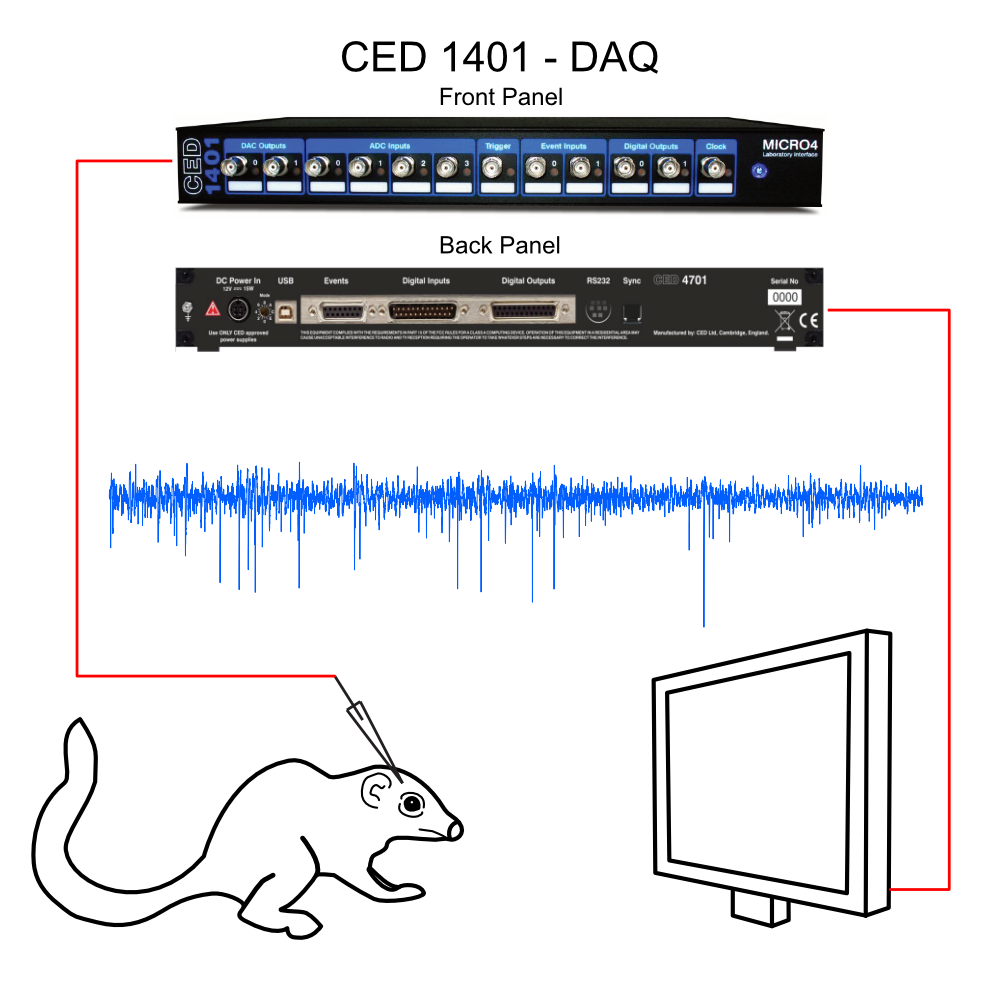

Tutorial 3.1
Getting started with NDI
This tutorial is an alternative to Tutorial 2.1 that is designed for users who are less familiar with programming. It will provide a brief overview of Matlab and object-oriented programming, more in-depth information about the methods and syntax used, and a guide on how to navigate the website and its documentation.
Basics of Matlab
Matlab is a language specifically designed for calculations, data visualization, and pattern recognition. It is less flexible in some areas than traditional programming languages, but it excels when working with matrices and arrays, which are data structures that contain multiple elements. It includes many built-in tools and additional libraries for a large variety of tasks.
Matlab allows for object-oriented programming, a programming paradigm where data and methods that modify that data are bundled together into objects. Classes can provide a template for objects, including class variables, methods, and constructors, which are methods that are used to create an object of a class with specific input parameters.
Classes define the states and behaviors of its objects, and constructors determine the initial values of a given object's attributes, called variables. Variables are used within programs to store all kinds of information, including numbers, individual characters, strings of characters, or arrays, which include a larger number of any given type of variable. Unlike many other programming languages, we do not have to specifically state a variable's type when declaring it.
We will start with learning to read an example dataset into NDI. We assume you have already
installed NDI and taken the introductory tutorial of the NDI model. These data are available in a
compressed folder
here. To learn more about Matlab, take a look at
Normally, we'd use some helper functions to open our data to make this process even easier, but this tutorial takes the user through the full manual process for training purposes. Throughout this tutorial, we will first go through the code in detail as necessary, then describe the general function of the block.
3.1.1 Introduction to the experiment
These data are single neuron recordings made with electrodes in the anesthetized tree shrew visual as a part of Van Hooser et al. 2013. This example data is a very small subset of the original data for the purposes of illustration.

In this experiment, a single unit recording electrode was inserted into either lateral geniculate nucleus or V1. The electrode was connected to
an amplifier, and the output signal was recorded by a Cambridge Electronic Design (CED) micro1401 digital acquisition board. A CED Spike2 software
script was used that stored 1 recording epoch per folder. In software, the voltage from the electrode was assigned to channel 11. A visual stimulus
monitor was set up in front of the animal, and visual stimuli were
generated by custom software running on a separate computer. A record of the stimulus parameters was stored in the epoch folder in a file called
stims.mat, and stimulus timing information was delivered to the digital inputs of the micro1401 in the form of a stimulus onset trigger and
an 8-bit stimulus code signal that were generated by the stimulus computer.
3.1.2 Introduction to the data
The data are in a folder called ts_exper1. It contains recordings of two neurons, an LGN neuron and a V1 neuron, to presentation of sinusoidal
gratings that either vary in orientation or in spatial frequency. The data, as provided by the host lab, are organized into subfolders, named t00001, t00002, t00003, and t00004. The first two folders are recordings of the LGN neuron, and the second two folders are recordings of the V1 neuron. Each t0000N folder has 3 files:
probemap.txt- a file that we made for NDI that describe what probes are recorded in this folderspike2data.smr- a CED Spike2 file that has the raw electrophysiology data and the stimulus timing informationstims.mat- A Matlab file that has detailed parameters of the stimuli that were run
Again, we recommend that you put ts_exper1 into the NDI folder within the MATLAB folder. It will make it much easier for Matlab to access it, and allow for the following code blocks to work properly.
First, let's list these files using the ls command (that's the letter l followed by the letter s, short for list) and take a quick look at what is in them. Set up the "prefix" path to your data as necessary. (Here, we assume you put the ts_exper1 folder into your Matlab userpath folder but you can put it anywhere.)
Code block 3.1.2.1: Setting a Path (Type this into Matlab)
prefix = [userpath filesep 'Documents' filesep 'NDI']; % or '/Users/yourusername/Desktop/' if you put it on the desktop perhaps
ls([prefix filesep 'ts_exper1' filesep 't*']); % list all the files in the t0000N folders
In the first line, we declare and initialize a variable called "prefix." Declaring a variable means assigning it a name and allocating memory for data to be stored, and initializing it means to assign it a value. In this case, this variable "prefix" has been assigned a text string that corresponds to a folder path, or an ordered list of folders.
In order to make this path, we start by using the function "userpath," which returns the name of the default MATLAB folder that we previously put the ts_exper1 folder into. Each new folder name afterwards represents going to a subfolder within the starting folder, and "filesep" acts as the separator characters between subfolders. We use filesep to make sure that every type of device can properly read the path, as different operating systems have different file separation characters. In Windows, this path would be represented as MATLAB\Documents\NDI, while in macOS, this path is MATLAB/Documents/NDI. Rather than writing out the entire path every time we access a file, we will want to go through the process of assigning a path to a variable for quicker access.
The ls command (short for list), lists all the files in a designated folder. In this case, we start from the folder described by "prefix," which we initialized earlier as MATLAB\Documents\NDI, then we go further down and select the t* folder inside ts_exper1.
Code block 3.1.2.2: Examining the Data (Type this in to Matlab)
my_smr_file = fullfile(prefix,'ts_exper1','t00001','spike2data.smr')
ndi.example.tutorial.plottreeshrewdata(my_smr_file);
In this block, we again assign a path to a variable. In this case, we use the fullfile function, which builds a path to a single file instead of an entire folder. This particular function uses commas rather than filesep between each subfolder/file; this is used whenever separating arguments in a method or function. Note that we reuse prefix, the variable that we defined earlier, in order to create our path more simply.
The next line introduces the concept of packages and their functions. Packages are folders that are used primarily to organize related classes and functions; they can also contain other subpackages. The syntax of our class tells us how the packages are structured: the main package is named "ndi," our subpackage is named "example," and the next subpackage is called "tutorial." Functions are files that contain multiple lines of code that receive inputs. As opposed to a script, which is a program that performs exactly the same way every time, functions are more like mathematical equations, having varied outputs or effects depending on their inputs. Our function is called plottreeshrewdata, which naturally plots the tree shrew neural data that our electrode gathered. This particular function requires an input parameter. In this case, this function requires a path to a specific file, which it will plot based on the file's data. Functions are useful when you have a specific piece of code that must be repeated several times and also requires many unique inputs.
Information about NDI packages and classes can be found in the documentation on the sidebar. The sidebar shows the hierarchy of packages and classes under the document reference and the syntax, descriptions of each parameter, and overall function of every method under the code reference. This particular method is found here. Looking at the documentation is one of the best ways to familiarize yourself with the different classes and methods of any program.
This function shows the raw voltage recording and the stimulus timing information. Each stimulus appears as a number and its duration is indicated by the black bar. You can pan with the mouse to scroll through the recording.
3.1.3 Specifying the metadata that NDI needs to read the experiment
Metadata is "data about data"- in this case, metadata is all information about the probes themselves, including their names, types, and unique identification. In this example, we have already prepared the metadata files that are necessary for NDI to read the data. Let's look at them in turn.
First, we need to tell NDI what probes we have in our experiment. A probe is anything that measures or stimulates; one end of a probe is connected to a subject, and the other end of a probe is connected to a data acquisition device. We first create an object of class ndi.epoch.epochprobemap. Again, the name of this object tells us that it was created from class epochprobemap, which is a class of the epoch package, which is itself a subpackage of the ndi package. Both classes we have seen are in the epoch package, indicating that they both relate to the function and display of epochs. The organization of packages can help us determine what the packages' contents should generally do; as always, make sure to look at the documentation for more specific information about a particular file.
We usually tell NDI how the probe is connected with a little code that instructs NDI how to read this information directly from the laboratory's own file information, but in this example, we will use the generic ndi.epoch.epochprobemap_daqsystem object, which reads in a simple tab-delimited text file. This line introduces the first instance of a class method. Methods are the operations of a class, taking in inputs called parameters and performing an action, often returning an output. This particular method is a constructor, which is a class method that takes in values and instantiates an object of the class with those specific values.
If we take a closer look at this class, we see the example constructor MYNDI_EPOCHPROBEMAP_DAQSYSTEM = ndi.epoch.epochprobemap(NAME, REFERENCE, TYPE, DEVICESTRING, SUBJECTSTRING). This is the general form of a constructor in Matlab: first is the name of the object, which is everything on the left side of the equals sign, then the name of the class that the constructor is part of, which is ndi.epoch.epochprobemap in this case, then each parameter, which is the list of words separated by commas. Note that the name of the object is the name used internally by our program, and is not necessarily the same as the NAME argument that we provide when we make the object.
We will describe how to use this constructor more thoroughly after we print the probemap.txt file for directory t00001:
Code block 3.1.3.1. Taking a look at the contents of probemap.txt. Type this in to Matlab:
type (fullfile(prefix,'ts_exper1','t00001','probemap.txt'))
The type function prints out the contents of probemap.txt. Again, we identified the path that Matlab must follow to reach this file.
You will see a tab-delimited text table that looks like the following. In the Matlab command window, the tabs may not line up, so don't be concerned if it doesn't look like a nice formatted table.
| name | reference | type | devicestring | subjectstring |
|---|---|---|---|---|
| ctx | 1 | n-trode | ced_daqsystem:ai11 | treeshrew_12345@mylab.org |
| vis_stim | 1 | stimulator | vis_daqsystem:mk30;text30;md1 | treeshrew_12345@mylab.org |
This text file has all of the information needed to specify the probe and its connections. It has a name for the probe that is meaningful to the user, and the reference specifies an identifier that groups the recordings of the probe. Typically, when the probe is in one physical position, the reference number is kept the same, but when the probe is moved (such as when an electrode is advanced), the reference number is incremented. This tells NDI to try to combine information from recordings that have the same name and reference. type tells NDI what type of probe it is: like the "name" from earlier, this is not the same as the Matlab function "type," which displays the contents of a file. There are a variety of pre-determined types, and this type instructs NDI (via this file) which probe object type to create in software.
Now that we have seen each argument in more detail, we can understand how exactly we make an object with this information. If we take the first probe in probemap.txt and substitute in its information, we can make an example object:
Example 1: Creating an Object. Do not type into Matlab:
example = ndi.epoch.epochprobemap(ctx, 1, n-trode, ced_daqsystem:ai11, treeshrew_12345@mylab.org)
As we can see, each piece of information from probemap.txt corresponds with a parameter in our object. The name of our object is entirely separate from the name of our probe, but would normally be something related to the actual name. In general, variables and objects can have any name, but it's often good to make names with actual meanings instead of many placeholder names or single characters.
Second, we need to specify the stimulus parameters metadata. Typically, one would create a metadata reader for one's own lab so that the native data can be read directly, but here we have made another tab-delimited text file with the parameters. You can read this for yourself by typing the following:
Code block 3.1.3.2. Taking a look at the stimulus parameters. Type this in to Matlab:
type (fullfile(prefix,'ts_exper1','t00001','stims.tsv'))
3.1.4 Gaining access to the data in NDI: ndi.session and ndi.daq.system objects
Now all that remains is to open the data directory (folder) as an ndi.session object, and make ndi.daq.system objects to read your data. We will use an ndi.session.dir object, which allows us to read information from a directory on disk.
We will create a new ndi.system object by calling the constructor with the reference name we wish to give to the session and the pathname to our data:
Code block 3.1.4.1. Creating an ndi.session object. Type this in to Matlab:
S = ndi.session.dir('ts_exper1',[prefix filesep 'ts_exper1'])
Now you have made a new object of ndi.session.dir called S. This constructor takes the form: E = ndi.session.dir(REFERENCE, PATHNAME). REFERENCE must be a unique string that will be used to refer to our object, and PATHNAME must be a path leading to a folder. The session S is brand new and doesn't know about any of the devices we used in our experiment. So, if we try to see if there are any probes, we will see that it doesn't know of any:
Code block 3.1.4.2. Checking for probes in a session. Type this in to Matlab:
S.getprobes()
Unless you ran this demo before, you won't see any probes here (it will return an empty cell array). This is the first method we've seen that is not a constructor. Note that we must call this method along with our session object: this is an example of a non-static method, which belongs to a specific object of the class. Much like calling functions, you use a dot between the name of the object and the name of the method. The parentheses after the method are necessary for every method, even if they have no arguments like in this case.
We need to make new ndi.daq.system objects for our data acquisition system and our stimulator. Our devices are multifunction data acquisition systems, so we use the ndi.daq.system.mfdaq subtype.
An ndi.daq.system object consists of three components: an ndi.file.navigator object whose job it is to find the files or streams associated with each epoch of data, an ndi.daq.reader object whose job it is to read the raw data from the files, and an ndi.daq.metadatareader (optionally) whose job is to read any metadata associated with the epoch (such as stimulus parameter information).
First, we will build an ndi.daq.system.mfdaq object that we will call 'ced_daqsystem' to
read the electrode data from our CED SMR files.
Code block 3.1.4.3. Building an ndi.daq.system.mfdaq object. Type this in to Matlab:
ced_filenav = ndi.file.navigator(S, {'.*\.smr\>', 'probemap.txt'}, ...
'ndi.epoch.epochprobemap_daqsystem','probemap.txt');
ced_rdr = ndi.daq.reader.mfdaq.cedspike2();
ced_system = ndi.daq.system.mfdaq('ced_daqsystem', ced_filenav, ced_rdr);
% if you haven't already added the daq system, you can add it here:
S.daqsystem_add(ced_system);
Note: If you ran the tutorial before, you may have added ced_system to your session S already. That's fine, you'll get an error if you try to do it again. If you want to remove all your daq systems, you can call ndi.session.daqsystem_clear() by typing S.daqsystem_clear(), and then you can add them again.
We first create the file navigator object, ced_filenav, utilizing the ndi.file.navigator constructor. As always, we need to specify the parameters of this navigator object. The properties of this class are listed here, and will also be listed here for convenience.
Properties
| Property | Description |
|---|---|
| session | The ndi.session to be examined (handle) |
| fileparameters | The parameters for finding files |
| epochprobemap_fileparameters | The parameters for finding the epochprobemap files |
| identifier | |
| epochprobemap_class |
In this case, the session is our object S. The fileparameters are {'..smr>', 'probemap.txt'}: The asterisk * acts as a wildcard in '..smr>', so our file navigator will access any file with extension .smr. The addition of 'probemap.txt' means that our navigator will also access this file. epochprobemap_fileparameters specifies the files that make up an epoch, which is just probemap.txt in this case, and the epochprobemap_class indicates which class of epoch record is used: in this case, it uses the default class ndi.epoch.epochprobemap_daqsystem. Note that the identifier is an optional parameter and is not used in this case.
After creating the navigator, we create the reader object that can specifically read CED smr files. We do not input any parameters into the ndi.daq.reader.mfdaq.cedspike2() method when creating the object because the only property it has is a unique identifier. NDI uses the default constructor to create an object with no input parameters.
We do not need to create a metadatareader object in this case because there is no metadata. Therefore, we can finally create the ndi.daq.system.mfdaq object.
Utilizing the ndi.daq.system.mfdaq method, we create the ced_system object. We specify the name as ced_daqsystem, the filenavigator as ced_filenav, the daqreader as ced_rdr, and the epochprobemap_class as ndi.epoch.epochprobemap_daqsystem. We do not specify the daqmetadatareader because we do not need one here, and we do not specify the identifier because we only make a single object; there's no need for a unique identifier.
Let's look at the epochs that ced_system can find in order to understand how it searches for epochs:
Code block 3.1.4.4. Taking a look at the epochtable and epochfiles. Type this into Matlab
% let's look at the epochs the daq.system can find
et = ced_system.epochtable() % should see a 4 element answer
f = ced_system.filenavigator.getepochfiles(1) % you should see the files from epoch 1, t00001
The first line uses the method epochtable() to return a structure array and assigns it to the variable "et". Structure arrays store data in containers called fields, each field containing data of its own. The Mathworks website has a helpful visual of structure arrays, located here. et has a 1x4 struct array with the fields epoch_id, epoch_session_id, epochprobemap, epoch_clock, t0_t1, and underlying_epochs. In other words, the struct array contains four different epochs, each with seven different fields. We recommend opening the et variable in the Workspace to take a direct look.
The method ced_system.filenavigator.getepochfiles(1) assigns all the files in epoch 1 (t00001) to the variable f. When we open f in the Workspace, we can see that there are two file paths. One is to spike2data.smr, while another is to probemap.txt.
The two lines of code described above are used to take a look at what epochs and epoch files exist in our session.
Second, we will build an ndi.daq.system.mfdaq object for our visual stimulus system. The setup for this DAQ system will be very similar to the prior example.
Code block 3.1.4.5. Building another ndi.daq.system.mfdaq object. Type this in to Matlab:
vis_filenav = ndi.file.navigator(S, {'.*\.smr\>', 'probemap.txt', 'stims.tsv'},...
'ndi.epoch.epochprobemap_daqsystem','probemap.txt');
vis_rdr = ndi.daq.reader.mfdaq.cedspike2();
vis_mdrdr = ndi.daq.metadatareader('stims.tsv');
vis_system = ndi.daq.system.mfdaq('vis_daqsystem', vis_filenav, vis_rdr, {vis_mdrdr});
% if you haven't already added the daq system, you can add it here:
S.daqsystem_add(vis_system);
The ced_system and the vis_system both have very similar readers ndi.daq.reader.mfdaq.cedspike2() under different object names. The only difference between the two is that the file parameters for the vis_system reader include the stims.tsv file. This means that the vis_rdr will be able to access the stims.tsv file as well. Again, we don't use identifiers when creating our ndi.daq.system.mfdaq object.
It might be useful to assign identifiers to each object now that we have more than one, but we won't be doing too much with these particular objects other than making our DAQ system.
Aside from differences in file parameters, the key difference between the ced_system and the vis_system is that the vis_system requires a ndi.daq.metadatareader object. Unlike the reader object which only requires an identifier that is assigned by NDI, the metadatareader object requires for us to manually identify the tab_separated_file_parameter property. In this case, we identify the tab_separated_file_parameter as the stims.tsv file.
Last, we will tell NDI how these devices are synchronized with each other. These two daq systems have a file in common (spike2data.smr), which
means that they have a common time base, but NDI doesn't know that the two daq systems can be synchronized yet. Here we add a "syncrule" that
tells NDI that any daq systems that share at least 2 files per epoch also share a common time clock for that epoch. Our two DAQ systems share the same session and files, meaning that our syncrule will sync their time clocks.
Code block 3.1.4.6. Synching the devices. Type this in to Matlab:
nsf = ndi.time.syncrule.filematch(struct('number_fullpath_matches',2));
S.syncgraph_addrule(nsf);
We create an object nsf of class ndi.time.synchrule.filematch, which dictates the number of files that must match in order for the syncrule to apply. The function "struct" creates a structural array with the syntax struct(field, value). In this case, the constructor takes an input of a structural array with field 'number_fullpath_matches.' whose value is 2.
This object is added to the session through the syncgraph_addrule() method so that NDI knows which DAQ systems to synchronize in our experiment. We know that the stimulator (vis_system) and the data acquisition system (ced_system) are in sync because they both share spike2data.smr and probemap.txt.
3.1.5 Opening the data in NDI: accessing probes via from ndi.daq.system.mfdaq
Now we can use NDI to see the probes that these daq systems can find and to access the data from those probes. Let's look at the electrode probe data first.
Code block 3.1.5.1. Examining and accessing the electrode probe data. Type this in to Matlab:
p = S.getprobes() % get all of the probes that are in the ndi.session S
for i=1:numel(p), p{i}, end; % display the probe information for each probe
% look at the number of epochs recorded for probe 1
p_ctx1_list = S.getprobes('name','ctx','reference',1) % returns a cell array of matches
p_ctx1 = p_ctx1_list{1}; % take the first one, should be the only one
et = p_ctx1.epochtable()
for i=1:numel(et), et(i), end; % display the epoch table entries
epoch_to_read = 1;
Here we first assign all the probes in session S to array p through the getprobes() method. Arrays are data types that contain several elements, each of which has the same data type. The position of each element is a number called the index. Unlike many other programming languages, Matlab's arrays start at 1 instead of 0, so the first element in an array has an index of 1, the second has an index of 2, and so on.
When you open p in the workspace, you see that there are 3 probes with unique properties. Each has a session, name, type, reference, underlying_element, direct, subject_id, dependencies, and identifier property assigned to them. To take a look at the properties of each probe in the command window, we utilize this for loop:
for i=1:numel(p), p{i}, end;
For loops are useful when we need to run a segment of code a specified number of times, such as iterating through each entry of an array. For loops work by creating a variable of a specified value, defining an end point with another value, then incrementing the variable until it equals the end point. Let's break down the for loop above.
We first define a variable i that begins at 1 and ends at numel(p). The colon is used to create a range of values that our loop will iterate through, increasing from the first value until it reaches the second value. The range is inclusive in Matlab, so the loop runs once more once it reaches the final value. For loops increment the variable by 1 by default, but a middle argument can be included to increment by a different amount instead.
numel() is a function used to return the number of elements inside an array. In our case we use numel(p), which gives a value of 3 for the 3 probes in the array p. Our loop will run 3 times: once initially when i = 1, a second time when i = 2, then a third time when i = 3. Once the variable increments past numel(p), the loop terminates. Finally, the p{i} shows the contents of element i of array p. Since i is our loop variable, the loop will display the 1st, 2nd, and 3rd elements of the array, in this case the information about each probe.
Before we take a look at the epoch data for each probe, we need to specify the probe in question. To get access to the probe that we want, we create an array p_ctx1_list utilizing the getprobes method while specifying the name and reference number. In the parenthesis of the method we write the name of the field followed by its value, so the method returns all probes with name 'ctx' and reference number 1. When we run this line of code we see that p_ctx1_list is a 1x1 cell array, so only one probe matches these criteria.
You can see that probe 1 has a name of ctx, a reference of 1, and it is of type n-trode, or an n-channel electrode. It has a software
object type of ndi.probe.timeseries.mfdaq, which simply means it is associated with multifunction DAQ systems and returns timeseries observations.
We then assign the first element(probe 1) in array p to the variable p_ctx1.
p_ctx1 = p_ctx1_list{1}.
The line of code above tells Matlab to assign the element with index 1 in the array of p_ctx1_list to the variable p_ctx1.
After creating p_ctx1, we create the epochtable for p_ctxt using the epochtable method. Like before, we assign the information to the array et, then use a for loop to display each entry in the epoch table. Inside of et are 2 epochs with a unique epoch_number, epoch_id, epoch_session_id, epochprobemap, epoch_clock, t0_t1, and underlying_epochs. At this point, however, there is no epochprobemap assigned to these epochs.
Now let's read data from our probe p_ctx1 and plot the data:
Code block 3.1.5.2. Plotting the electrode probe data. Type this into Matlab
[data,t,timeref_p_ctx1]=p_ctx1.readtimeseries(epoch_to_read,-Inf,Inf); % read all data from epoch 1
figure(100);
plot(t,data);
xlabel('Time(s)');
ylabel('Voltage (V)');
set(gca,'xlim',[t(1) t(end)]);
box off;
This code calls an important function for reading data from probes: ndi.timeseries.readtimeseries:
This code is documentation; do not type into Matlab
[D, T, TIMEREF] = ndi.timeseries.readtimeseries(EPOCH_OR_TIMEREF, T0, T1)
% Reads data and timestamps from an ndi.timeseries.readtimeseries object with respect
% to a specific epoch or an ndi.time.timereference object, from time T0 to T1.
We identified the epoch_to_read as 1 prior, and we tell the NDI to read the timestamps and data starting from time equals negative infinity to time equals positive infinity. We essentially tell the NDI to read all of the data in epoch 1 and assign them to the arrays data and t, with TIMEREF referring to the units of time of t.
Then we create a figure labeled 100 using the figure(100) line of code. This opens up a figure where we can plot data. The number acts as an identifier, not as any property of the graph itself.
The plot function is used to plot the variable t with data obtained prior. This will show us the electrode probe data in voltage vs. time.
Finally we will use the xlabel and ylabel function to label the axis of our figure. The last 2 lines of code are used to adjust the appearance of the plot. 'set(gca, 'xlim', [t(1) t(end)]' edits the x-values of the current axes to go from the initial time to the final time, and 'box off' simply removes the box around the graph.
When analyzing data or writing apps to analyze data, ndi.timeseries.readtimeseries is one of the most commonly called functions.
Now let's also look at our stimulator probe vis_stim. First, let's examine the epochs that are known to vis_stim:
Code block 3.1.5.3. Examining and accessing the stimulator data. Type this in to Matlab:
p_visstim_list = S.getprobes('name','vis_stim','reference',1) % returns a cell array of matches
p_visstim = p_visstim_list{1}; % take the first one, should be the only one
et = p_visstim.epochtable()
for i=1:numel(et), et(i), end; % display the epoch table entries
This code is nearly identical to what we used in code block 3.1.5.1.
Now let's read the data from our stimulator. To do this, we are going to ask NDI to read the stimulus timing information
in the time units of our electrode probe p_ctx. You'll notice that when we read data from p_ctx1, readtimeseries returned
an ndi.time.timereference object timeref_p_ctx1.
Let's examine this quickly:
Code block 3.1.5.4. Taking a look at the ndi.time.timereference object. Type this in to Matlab:
timeref_p_ctx1
You'll see a structure with the following fields:
timeref_p_ctx1 |
timereference with properties |
|---|---|
| referent | [1x1 ndi.probe.timeseries.mfdaq] |
| clocktype | [1x1 ndi.time.clocktype] |
| epoch | 1 |
| time | 0 |
| session_ID | '412687ba08e28694_c0d9c07d0b8726cf' |
In NDI, one can refer to time with respect to a variety of different clocks, which is helpful because daq systems typically do not have access to a global clock. We can now ask for the time of the stimulus presentations with respect to our electrode's clock, and add the onset times to the graph.
Code block 3.1.5.5. Plotting the stimulator and electrode probe data. Type this in to Matlab:
[data,t,timeref_stim]=p_visstim.readtimeseries(timeref_p_ctx1,-Inf,Inf); % read all data from epoch 1 of p_ctx1 !
figure(100);
hold on;
vlt.neuro.stimulus.plot_stimulus_timeseries(7,t.stimon,t.stimon+2,'stimid',data.stimid);
We use the readtimeseries method to read the p_visstim data. Note that we specify to the function that we are using the timeref_p_ctx1 from the electrode probe data to ask for the time of the stimulus presentations with respect to our electrode's clock.
By calling figure(100) once more, we specify to Matlab that we want to use figure 100 to plot our stimulus data. However, the problem that arises is that the electrode probe data is already plotted on figure 100. To solve this problem, we utilize the hold on command.
hold on is used to save the plots on the current figure so that new plots added on the figure do not delete the existing plots. This is important for us because we want to see the simulus data in relation to the electrode probe data on the same graph.
The function vlt.neuro.stimulus.plot_stimulus_timeseries is then used to represent the stimulus data as black bars on the plot.
Let's look at what readtimeseries returned in the case of a stimulator. It is a little different than when being used with regularly-sampled data.
Code block 3.1.5.6. The output of the readtimeseries method for the stimulator. Type this in to Matlab:
t, % show timestamps
t.stimon,
data, % show data
data.stimid,
data.parameters{1}
Here we examined several fields of the variables data and t returned from readtimeseries from our
ndi.probe.timeseries.stimulator.
You can see that t is a structure with 2 fields, stimon and stimoff. Our system kept track of when each stimulus began, but in these recordings, we did not have our data acquisition system
keep track of when our stimulus turned off. (For later analysis, we will need to read this from the stimulus parameters.)
You can also see that data has some metadata about the stimuli. It has the ID number of each stimulus that was shown (data.stimid(1) is the stimulus that turned on at t.stimon(1)), and
it has the parameters of each stimulus. data.parameters{1} is the parameters of the stimulus with ID number 1.
3.1.6 Discussion/Feedback
This concludes our tutorial on the fully manual way of reading data through NDI. This detailed tutorial is a work in progress, so please provide feedback in the comments.
In the next tutorial, we'll explore how to create a couple of code objects that read our data directly from a lab's internal structure.